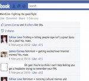
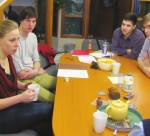
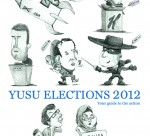

YUSU Elections 2012
News
Kallum Taylor takes Presidential victory in hotly contested elections
In what has been a close contest over the last two weeks, Kallum Taylor emerged victorious in the battle for YUSU President, winning by 2129 votes to Zahra Latif’s 1745 in the fourth round
Reaction to the election results
Listen to the reactions from some of the winning and losing candidates
 As it happened: YUSU 2012 Election results
As it happened: YUSU 2012 Election results
Nouse brings you the results of the 2012 YUSU Elections as they are announced from The Lounge
Election exit poll predicts three way battle for President
Exit polls released for the YUSU elections have predicted Kallum Taylor to win by a margin of only one per cent.
High turnout seen in YUSU Elections
Voter turnout for the 2012 YUSU Elections is expected to be one of the highest on record after reaching 27 per cent as of 12pm today with two and a half days of campaigning still remaining
Carney “expecting to be given campaigning ban”
Presidential candidate James Carney has declared that he is “expecting to be given a campaigning ban in the near future” following a breach of YUSU election rules
Storify: YUSU President election campaigns
A round up of some of the candidates’ campaign efforts and the reaction to them, as seen on social media
Election manifestos condensed
Find out what the candidates are prioritising by looking at their manifestos condensed
Carney embroiled in Facebook dispute
Presidential Candidate James Carney, has been criticised by current YUSU Part-time Officers following his controversial addition to the University of York Memes Facebook page.
YUSU election preliminary poll shows two candidates as the early front runners
A poll carried out by Nouse shows Kallum Taylor and Zahra Latif are clear front runners in the YUSU election presidential campaign
YUSU Elections: Do they really matter?
A panel of representatives from across campus, chaired by Martin Spurr, gathered to talk about: YUSU’s relationship with the University; student politics; and speculation on the outcome of the YUSU elections
Cartoons of the candidates running for YUSU President
Cartoons of the seven candidates running for the position of YUSU President by Hugo Brook
As it happened: YUSU Election Candidate Question Time
All the latest from the YUSU Elections 2012 Candidate’s Question Time, as it happened
Over 50 candidates standing in YUSU elections
Nouse can reveal the students who have nominated themselves for this year’s YUSU elections, with seven candidates putting themselves forward for the position of President
YUSU election timetable released
The timetable for the YUSU elections has been released, detailing the main events of the upcoming election. Candidate nominations will open on the Monday of Week Four and close on Thursday of Week Five at 12 p.m. Candidates are forbidden from starting their campaigns until the Friday of Week Six, and are restrained by a [...]
Election Timeline
Nominations open: Monday 30th January, 12:00
Nominations close: Thursday 9th February, 12:00
Candidate briefings: Friday 10th February & Saturday 11th February
Candidate question time: Thursday 16th February
Voting opens: Wednesday 22nd February, 12:00
Voting closes: Thursday 1st March, 12:00
Results announced: Thursday 1st March, from 19:30
Latest post: The societies showdown
Well readers, if you’re looking for a bloody battle this election season, it looks like the realm of student activities shall provide generously
What was so special about K?